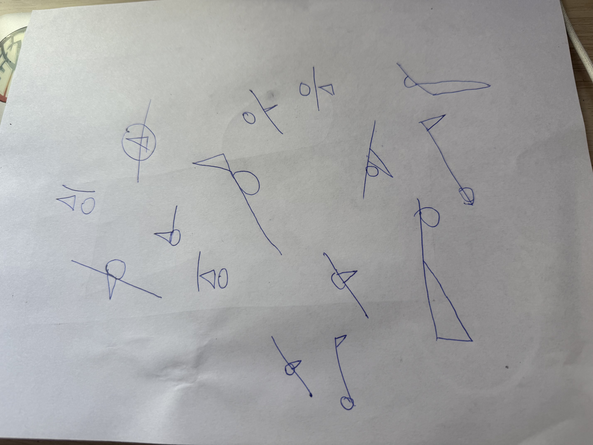
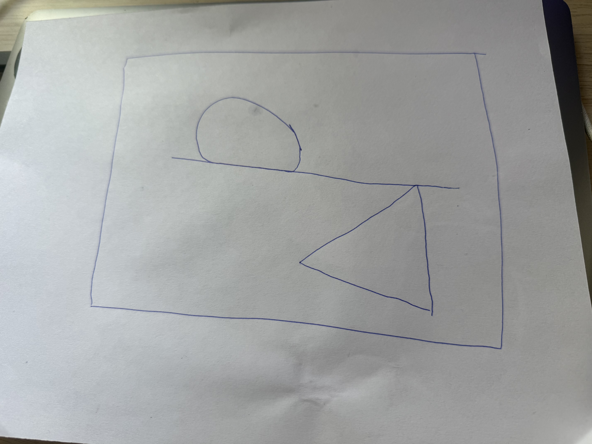

For this week's sketch, I wanted to make something simple but also sporadic. Where upon every refresh, the canvas outputs a different feeling while also following a set of ruleset that brings out a some sort of pattern. I was inspired by Mealody's piece of 'Structure de Quadrilatères,' where, although sporadic, the canvas still has a repetitive structure that allows the code to output a similar piece. Sol LeWitt's 'Wall drawing 51' inspired me to create a simple design that could be interpreted in various of ways, I liked the use of lines in that piece and wanted to see what I could do with a simple principle. For my sketch, I decided that I want to have a line to be the main principle behind the piece. For the line to set the main parameter in how the sketch will look like. Upon drawing and doodling on a piece of paper, I became interested in having a triangle and circle be always within the line, as in touching the line, almost making the 3 shapes one overall entity. During trial and errors, I had difficulty programing the math behind the placement of the circle and triangle having to conform to the line, and the color math to make both shapes have different colors where it gradually fades to a different complementary color. Finally, the results came back great! I love the shape that the code outputs while also making it feel minimalistic and special.
I go in detail about how the code workes within the code file itsel.

